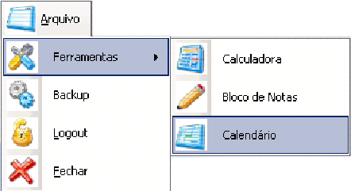

|
|
O MENU ARQUIVO
O Menu Arquivo se encontra na parte superior esquerda
da tela
principal e provê um acesso rápido a funções externas e ferramentas utilitárias
do SICEP 1.0, abaixo você pode conferir o detalhamento de cada uma dessas ferramentas
e como acessa-las.

- ARQUIVO: Posicione o mouse sobre este título,
o conteúdo do menu será exibido.
- FERRAMENTAS:Posicionando o mouse sobre este título você visualizará
as ferramentas disponíveis para consulta rápida e uso direto. Aqui você encontra
acesso a calculadora e bloco de notas do Windows e ainda um calendário para consultas
rápidas. Veja mais...
- BACKUP: Clicando sobre este título a janela de backup
será apresentada, em suma, o backup é um
sistema que armazena suas informações em
locais seguros
do sistema. Veja mais...
- LOGOUT: O logout é a ação que determina que a pessoa que está no programa
deseja sair e entrar como outro usuário. Veja mais...
- FECHAR: Clique aqui para encerrar o SICEP 1.0.
VOLTAR A HOME
|
|
|
 Prefeitura Municipal de Medeiros
- Todos os direitos reservados/2006 Prefeitura Municipal de Medeiros
- Todos os direitos reservados/2006
|
|